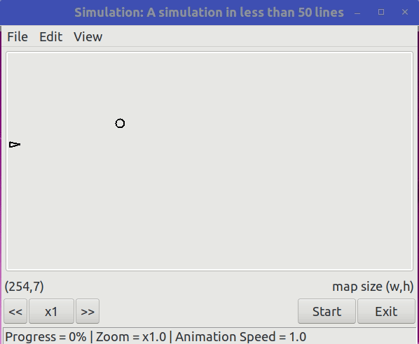
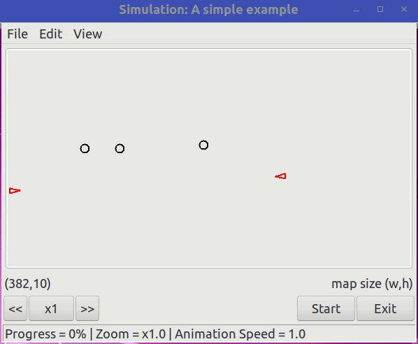
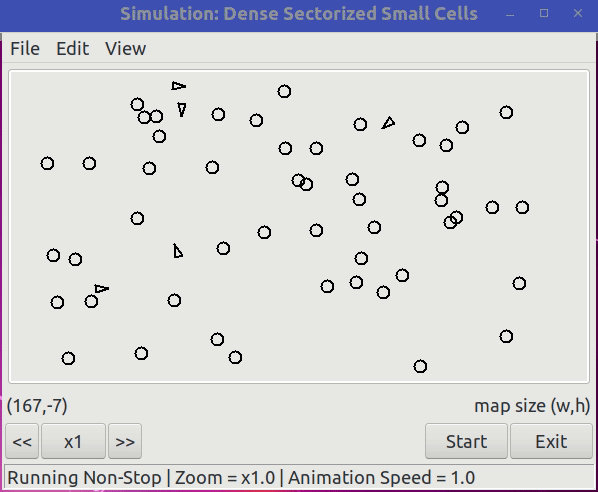
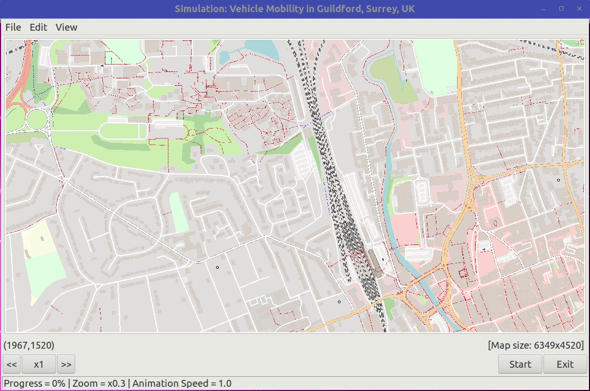
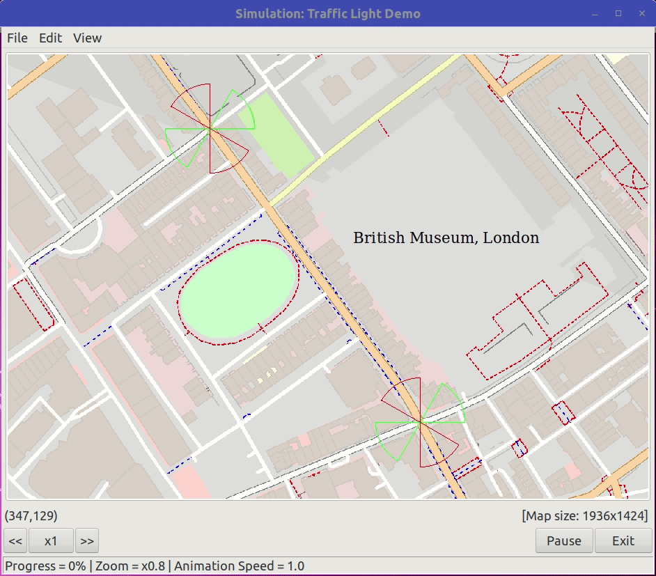
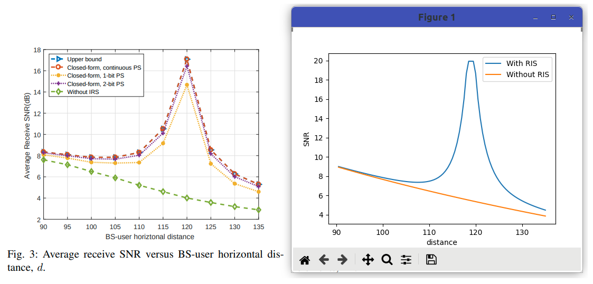

List of Packages and Modules¶
Note
The release version of this documentation can be found
here: sim.version.Version.
List of Examples¶
Example 1¶
This is a simple example to show how a simualtion can be created within 50 lines.
1 2 3 4 5 6 7 8 9 10 11 12 13 14 15 16 17 18 19 20 21 22 23 24 25 26 27 28 29 30 31 32 33 34 35 36 37 38 39 40 41 42 43 44 45 46 47 48 49 | '''This is a simple example to show how a simualtion can be created within 50 lines.'''
from sim.simulation import World
from sim.loc import ScreenXY as XY
from sim.scenario import BaseScenario
from node.node import BaseNode
from node.type import BaseStation, Vehicle
from node.mobility import Stationary, StaticPath
from comm.transceiver import Transceiver
from comm.channel import DiscModel
class MyBS(BaseNode):
'''MyBS: This is a base station design.'''
def __init__(self, simworld, id, loc, freq, channel):
super().__init__(simworld, id, node_type=BaseStation(self))
self.set_transceiver(Transceiver(self,freq, channel))
self.set_mobility(Stationary(loc))
class MyVehicle(BaseNode):
'''MyVehicle: This is a vehicle design.'''
def __init__(self, simworld, id, start_loc, path, freq, channel):
super().__init__(simworld, id, node_type=Vehicle(self))
self.set_transceiver(Transceiver(self,freq, channel))
self.set_mobility(StaticPath(start_loc,path))
class MyScenario(BaseScenario):
'''This is MyScenario. It reimplements on_create() and on_event().'''
def on_create(self, simworld) -> bool: # this will be called at the start
self.set_name("A simulation in less than 50 lines")
omni = DiscModel(radius=100)
self.my_bs = MyBS(simworld, "BS", XY(160,100), freq=2.4, channel=omni)
self.my_vehicle = MyVehicle(simworld, id="Vehicle", freq=2.4, channel=omni,
start_loc=XY(10,130), path=[(60,XY(350,130))])
return True
def on_event(self, sim_time, event_obj): # this will be called repeatedly
self.my_bs.clear_drawing()
self.my_vehicle.clear_drawing()
beacon_message = self.my_bs.get("transceiver").create_signal()
for (node,signal) in self.my_bs.get("transceiver").broadcast(beacon_message):
if node is self.my_vehicle:
self.my_bs.draw_circle(100)
self.my_vehicle.draw_line(self.my_bs)
if __name__ == "__main__":
sim = World()
sim.config(sim_stop=5.0, sim_step=0.1, sim_speed=1.0, display_option=True,
scenario=MyScenario(sim))
sim.run()
|
Example 2¶
This is an example which demonstrates a cluster of sectorized BSs serving vehicles in a highway scenario. The mobility of vehicles is predefined and static in this example. The simulation will run for 10 seconds.
In this example, we use vehicle centric where vehicle will send a hello message to collect signal quality from all sectors of all BSs, and then associate with the sector with the highest quality (i.e. strongest SNR). The example shows how to use Transceiver class to send and detect signals, and measure the signal quality of a received signal.
Show source code
'''
This is an example which demonstrates a cluster of sectorized BSs serving vehicles in a
highway scenario. The mobility of vehicles is predefined and static in this example.
The simulation will run for 10 seconds.
In this example, we use vehicle centric where vehicle will send a hello message
to collect signal quality from all sectors of all BSs, and then associate with the sector
with the highest quality (i.e. strongest SNR). The example shows how to use Transceiver
class to send and detect signals, and measure the signal quality of a received signal.
'''
import wx
import operator
import argparse
from argparse import Namespace, ArgumentParser
from sim.simulation import World
from sim.loc import ScreenXY as XY
from sim.scenario import BaseScenario
from sim.event import Event
from node.node import BaseNode
from node.mobility import Stationary, StaticPath
from comm.transceiver import Transceiver, TransceiverDir
from comm.channel import DiscModel
import node.type as NodeType
####################################################################
## Nodes
####################################################################
class MySector(BaseNode):
'''
MySector: This is a sector of a base station in the VANET sim world
'''
def __init__(self, simworld, id, loc, freq, channel, sector_width, sector_dir):
super().__init__(simworld, id, node_type=NodeType.BaseStation(self))
self.transceiver = TransceiverDir(self,freq,channel,sector_width,sector_dir)
self.serving_node = None
## setup the sector
self.set_transceiver(self.transceiver)
self.set_mobility(Stationary(loc))
## show the coverage of this sector
def show_coverage(self):
self.clear_drawing() # this is persistent drawing, so need to clear the all first
if self.serving_node!=None:
if self.transceiver.get_property("type")=="omni":
self.draw_circle(self.transceiver.get_property("radius"))
elif self.transceiver.get_property("type")=="directional":
self.draw_sector(self.transceiver.get_property("radius"),
self.transceiver.get_property("azimuth"),
self.transceiver.get_property("beam width"))
class MyVehicle(BaseNode):
'''
MyVehicle: This is a transmitting node in the VANET sim world
'''
def __init__(self, simworld, id, freq, channel):
super().__init__(simworld, id, node_type=NodeType.Vehicle(self))
## initialize some properties
self.transceiver = Transceiver(self,freq,channel)
self.set_transceiver(self.transceiver)
self.associated_sector = None
## initialize some variables to collect statistics
self.connectivity = [ [None,0,0] ] # list of connections: [sector, start_time, end_time]
## associate with a sector
def associate_sector(self,sector,time):
self.associated_sector = sector
sector.serving_node = self
self.connectivity.append([sector,time,0])
## remove sector association due to lost of connection
def lost_sector(self,time):
self.associated_sector.serving_node = None
self.associated_sector = None
self.connectivity[len(self.connectivity)-1][2] = time
## draw a line to the associated sector, if any
def show_connection(self):
self.clear_drawing()
if self.associated_sector!=None:
self.draw_line(self.associated_sector)
self.set_color(wx.BLACK)
else:
self.set_color(wx.RED)
####################################################################
## Scenario
####################################################################
class MyScenario(BaseScenario):
'''
MyScenario: This is my scenario
'''
##---------------------------------------------------------------
## This method will be called before the start of the simulation,
## build the simulation world here
def on_create(self, simworld) -> bool:
## give a name
self.set_name("A simple example")
## create a common channel
carrier_freq = 2.4
coverage_range = 100
beam_width = 60
sector_dir = [180-60, 180, 180+60]
ch_omni = DiscModel(coverage_range)
## create some nodes on the map
bs_locs = [XY(110,140),XY(160,140),XY(280,135)] # locations
self.sectors = []
for i in range(0,len(bs_locs)): # BSs
for j in range(0,len(sector_dir)): # sectors for each BS
id = "BS-%d.%d"%(i+1,j+1)
sector = MySector(simworld, id, bs_locs[i], carrier_freq, ch_omni,
beam_width, sector_dir[j])
self.sectors.append(sector)
## create some vehicles on the highway
self.vehicles = []
path = [ (60, XY(200,200)), (30, XY(400,200)) ]
node = MyVehicle(simworld, id="Vehicle1", freq=carrier_freq, channel=ch_omni)
node.set_mobility(StaticPath(start_loc=XY(10,200),path=path))
self.vehicles.append(node)
path = [ (40, XY(150,180)), (50, XY(5,180)) ]
node = MyVehicle(simworld, id="Vehicle2", freq=carrier_freq, channel=ch_omni)
node.set_mobility(StaticPath(start_loc=XY(390,180),path=path))
self.vehicles.append(node)
return True
##-------------------------------------------------------------
## This method will be called repeatedly until the simulation
## is ended or stopped, perform any user simulation action here
def on_event(self, sim_time, event_obj):
all_vehicles = self.vehicles
all_sectors = self.sectors
## check vehicle connectivity with its associated sector
for vehicle in all_vehicles:
my_sector = vehicle.associated_sector
if my_sector==None: continue # skip if none
beacon = vehicle.transceiver.create_signal()
if vehicle.transceiver.unicast(beacon,my_sector) is None: # lost connection
vehicle.lost_sector(sim_time)
print("at t=%1.2f, %s lost connection with %s"%(sim_time,vehicle.id,my_sector.id))
## make associatiation with sector if needed
for vehicle in all_vehicles:
## step 1: check sector association, skip if already associated
if vehicle.associated_sector!=None: continue
## step 2: find strongest SNR to associate
sector_max = None
detection_list = []
beacon = vehicle.transceiver.create_signal()
reply_list = vehicle.transceiver.broadcast(beacon)
for (sector,signal) in reply_list:
## 2.1 check that the reachable node is a sector currently not serving other
if sector.type!=NodeType.BaseStation: continue # skip if not a base station type
if sector.serving_node!=None: continue # skip if sector is already serving other
## 2.2 sector beam replies beacon for vehicle to obtain the signal quality
beacon_reply = sector.transceiver.create_signal()
recv_signal = sector.transceiver.unicast(beacon_reply,vehicle)
if recv_signal is None: continue # skip if failed, likely not in coverage
## 2.3 append to the detection list
detection_list.append((sector,recv_signal.quality))
## step 3: associate with the sector with the strongest SNR, if exists
if len(detection_list)!=0:
sector_max = max(detection_list,key=operator.itemgetter(1))[0]
if sector_max!=None:
vehicle.associate_sector(sector_max,sim_time)
print("at t=%1.2f, %s associated with %s"%(sim_time,vehicle.id,sector_max.id))
## draw connectivity & beam coverage on the map
for vehicle in all_vehicles:
vehicle.show_connection()
for sector in all_sectors:
sector.show_coverage()
## print statistics at the end of the simulation
if event_obj==Event.SIM_END:
print("\nStatistics (connected BS=duration):")
conn_info_all = []
average_all = []
for vehicle in all_vehicles: # get statistics into `conn_info_all[]`
conn_info_each = []
sum_duration = 0
connection_count = 0
for conn in vehicle.connectivity:
if conn[0]==None: continue
conn_info_each.append([conn[0].id,conn[2]-conn[1]])
sum_duration += conn[2]-conn[1]
connection_count += 1
conn_info_all.append(conn_info_each)
average_all.append(sum_duration/connection_count)
def print_fixed(text):
print(f" {text:15}",end='')
for vehicle in all_vehicles: # line 1, heading
print_fixed(vehicle.id)
print("")
max_record = 0
for vehicle in all_vehicles: # line 2, separator
print_fixed("-"*len(vehicle.id))
print("")
for record in conn_info_all: # line 3..., connection info
if len(record)>max_record:
max_record = len(record)
for idx in range(0,max_record):
for vnode in range(0,len(conn_info_all)):
if idx<len(conn_info_all[vnode]):
print_fixed("%s=%1.2f"%(conn_info_all[vnode][idx][0],
conn_info_all[vnode][idx][1]))
else:
print_fixed(" ")
print("")
for vehicle in all_vehicles: # 2nd last line, separator
print_fixed("-"*len(vehicle.id))
print("")
for average in average_all: # last line, average values
print_fixed("Mean=%1.2f"%average)
print("")
####################################################################
## main
####################################################################
if __name__ == "__main__":
## command line parameters
parser: ArgumentParser = argparse.ArgumentParser()
parser.add_argument("--nodisplay", help="Run in no GUI mode", action="store_true")
parser.add_argument("--step", help="Mobility step time (in sec)", type=int, default=0.1)
parser.add_argument("--speed", help="Animation playback speed (x times)", type=float, default=1.0)
parser.add_argument("--duration", help="Simulation duration (in sec), -1 for non-stop", type=int, default=10.0)
args: Namespace = parser.parse_args()
## welcome info
print("A Simple VANET Environment. Press [^C] to quit")
if args.nodisplay: print("- simulation will run without animation")
else: print("- animation will playback at x%1.2f speed"%args.speed)
print("- vehicles move a step every %1.2f s in simulation"%args.step)
if args.duration>0: print("- simulation will stop at %1.2f s"%args.duration)
else: print("- simulation will run non-stop")
## create, setup and run the simulation
## note that to run a simulation, we need to create a 'scenario'
run_flag = True
while run_flag:
sim = World()
sim.config(sim_stop = args.duration,
sim_step = args.step,
sim_speed = args.speed,
display_option = not args.nodisplay,
scenario = MyScenario(sim))
print("\nRunning PyMoSim version v%d.%d.%d"%sim.version())
run_flag = sim.run()
Example 3¶
This is an example which demonstrates a cluster of mmWave BSs serving vehicles in a highway (M26) scenario. The background is a static image of M26 highway, and the mobility of the vehicles is carefully designed so that they appear moving on the highway. The simulation run continuously. Our design and assumptions are:
Vehicle Centric: Vehicle will send a hello beacon message to collect signal quality from all BS sectors, and then choose a sector to assiciate.
Strongest SNR: When choosing a BS to associate, the vehicle always pick the one with the highest signal quality (i.e. strongest SNR).
Simultaneous beams: A BS may have multiple radio heads (RHs), each RH radiates a beam on a sector. The BS can use all beams at the same time, each beam can serve a vehicle. If, say, the BS has 3 beams, and the condition is right, the BS can turn all beams active to serve 3 different vehicles at the same time.
Interference: If a vehicle is simultaneously covered by two active beams, interference occurs, and the transmission during that simulation time step is considered unsuccessful. We assume that the vehicle remains associated with the BS, but the transmission rate for that time step is zero.
Beam and channel model: There are two options in this example.
Option 1: Vehicles use omni-directional ideal Disc model, BSs use 6 ideal sectors. All 6 sectors combined give a perfect circle coverage. This is the default option.
Option 2: Vehicles use omni-directional Disc model, BSs use 28GHz mmWave beamforming to create 6 sectors.
Show source code
'''
This is an example which demonstrates a cluster of mmWave BSs serving vehicles
in a highway (M26) scenario. The background is a static image of M26 highway,
and the mobility of the vehicles is carefully designed so that they appear
moving on the highway.
The simulation run continuously. Our design and assumptions are:
- Vehicle Centric: Vehicle will send a hello beacon message to collect signal quality
from all BS sectors, and then choose a sector to assiciate.
- Strongest SNR: When choosing a BS to associate, the vehicle always pick the one
with the highest signal quality (i.e. strongest SNR).
- Simultaneous beams: A BS may have multiple radio heads (RHs), each RH radiates
a beam on a sector. The BS can use all beams at the same time, each beam can serve
a vehicle. If, say, the BS has 3 beams, and the condition is right, the BS can turn
all beams active to serve 3 different vehicles at the same time.
- Interference: If a vehicle is simultaneously covered by two active beams,
interference occurs, and the transmission during that simulation time step is
considered unsuccessful. We assume that the vehicle remains associated with the
BS, but the transmission rate for that time step is zero.
- Beam and channel model: There are two options in this example.
- Option 1: Vehicles use omni-directional ideal Disc model, BSs use 6 ideal sectors.
All 6 sectors combined give a perfect circle coverage. This is the default option.
- Option 2: Vehicles use omni-directional Disc model, BSs use 28GHz mmWave beamforming
to create 6 sectors.
'''
import wx
import operator
import argparse
import random
import math
from argparse import Namespace, ArgumentParser
from sim.simulation import World
from sim.loc import ScreenXY as XY
from sim.scenario import BaseScenario
from sim.event import Event
from node.node import BaseNode
from node.mobility import Stationary, StaticPath
from comm.transceiver import Transceiver, TransceiverDir
from comm.channel import DiscModel
import node.type as NodeType
## for mmWave transmission, we need the following:
from comm.mmwave28 import Channel28GHz, Transceiver28GHz, Transceiver28GHzOmni
## pick option 1 or option 2
class GlobalVariable: pass
global_var = GlobalVariable()
global_var.option = 1 # option 1: ideal disc channel model
#global_var.option = 2 # option 2: mmWave beamforming model
####################################################################
## Helper
####################################################################
class DebugPrint:
def print(self, *args, **kw):
print(*args, **kw) # comment this line out to disable debug printing
pass
####################################################################
## Nodes
####################################################################
class MySector(BaseNode):
'''
MySector: This is a base station in the VANET sim world implementing
ideal sector radiation (option 1) or mmWave beamforming (option 2)
'''
def __init__(self, simworld, id, loc, freq, channel, sector_width, sector_dir):
super().__init__(simworld, id, node_type=NodeType.BaseStation(self))
## create transceiver
if global_var.option==1:
self.transceiver = TransceiverDir(self,freq,channel,sector_width,sector_dir)
elif global_var.option==2:
## convert sector_width to beam_3dB
# for 6 sectors, sector_width=60. Based on 3GPP, beam_3dB = 35
# for 3 sectors, sector_width=120. Based on 3GPP, beam_3dB = 70
# so, beam_3dB = sector_width * 35/60 degree (to convert to rad)
beam_3dB_rad = sector_width * 35/60 * math.pi/180
## setup the transceiver to create coverage range around 80
self.transceiver = Transceiver28GHz(self, freq, channel,
tx_power=20, # dBm
gain_tx=2, # dB
beam_3dB=beam_3dB_rad,
pointing_dir=sector_dir)
self.serving_node = None
## setup the sector
self.set_transceiver(self.transceiver)
self.set_mobility(Stationary(loc))
## show the coverage of this sector
def show_coverage(self):
self.clear_drawing() # this is persistent drawing, so need to clear the all first
if self.serving_node!=None:
if self.transceiver.get_property("type")=="omni":
self.draw_circle(self.transceiver.get_property("radius"))
elif (self.transceiver.get_property("type")=="directional"
or self.transceiver.get_property("type")=="mmWaveBeam"):
self.draw_sector(self.transceiver.get_property("radius"),
self.transceiver.get_property("azimuth"),
self.transceiver.get_property("beam width"))
class MyVehicle(BaseNode):
'''
MyVehicle: This is a transmitting node in the VANET sim world
'''
def __init__(self, simworld, id, freq, channel):
super().__init__(simworld, id, node_type=NodeType.Vehicle(self))
## create transceiver
if global_var.option==1:
self.transceiver = Transceiver(self,freq,channel)
elif global_var.option==2:
self.transceiver = Transceiver28GHzOmni(self, freq, channel,
tx_power=20, # dBm
gain_tx=2) # dB
self.set_transceiver(self.transceiver)
self.associated_sector = None
self.has_interference = False
self.curr_conn = 0
self.connectivity = [ [None,0,0] ] # list of connections: [sector, start_time, end_time]
def associate_sector(self,sector,time):
self.associated_sector = sector
sector.serving_node = self
self.connectivity.append([sector,time,0])
self.curr_conn += 1
def lost_sector(self,time):
self.associated_sector.serving_node = None
self.associated_sector = None
self.connectivity[self.curr_conn][2] = time
## draw a line to the associated sector, if any
def show_connection(self):
self.clear_drawing() # this is persistent drawing, so need to clear the all first
if self.associated_sector!=None:
if self.has_interference:
# vehicle with a sector & has interference
self.set_color(wx.BLACK)
self.draw_line(self.associated_sector,pen = wx.Pen(wx.BLACK,1,style=wx.PENSTYLE_SHORT_DASH))
else:
# vehicle with a sector & has no interference
self.draw_line(self.associated_sector,pen = wx.Pen(wx.BLUE,2,style=wx.PENSTYLE_SOLID))
self.set_color(wx.BLUE)
else:
# vehicle without a sector association
self.set_color(wx.RED)
####################################################################
## Scenario
####################################################################
class MyScenario(BaseScenario,DebugPrint):
'''
MyScenario: This is my scenario
'''
## ------------------------------------------------------------
## This method will be called before the start of the simulation,
## build the simulation world here
def on_create(self, simworld) -> bool:
## simulation variables
self.simworld = simworld
if self.simworld.is_animation_shown():
bitmap = wx.Bitmap()
if bitmap.LoadFile("M26.png"):
self.set_background(bitmap,-500,0)
else:
print("Error loading bitmap file, no background is applied.")
self.set_name("A busy highway (M26)")
## configure tranceiver property for each BS sector
beam_radius = 80
beam_num = 6 # must be an integer
beam_width = 360/beam_num
beam_pointing = 0 # 0 means north
sector = {}
for i in range(0,beam_num):
angle = beam_pointing + i*beam_width
while angle>=360: angle-=360
sector[i] = {"angle":angle, "width":beam_width}
## create channel for signal propagation model
carrier_freq = 28 # GHz
ch_disc = DiscModel(beam_radius)
ch_28GHz = Channel28GHz()
if global_var.option==1: channel_model = ch_disc
elif global_var.option==2: channel_model = ch_28GHz
else:
print("Error: Wrong option\n")
return False
## create some nodes on the north and south sides of the highway
bs_locs = [XY(110,260),XY(210,260),XY(340,260)] # south locations
bs_locs += [XY(100,180),XY(220,180),XY(360,180)] # north locations
self.bs_nodes = []
for i in range(0,len(bs_locs)): # each BS location
for j in range(0,len(sector)): # create sectors for each BS
this_id = "BS%d.%d"%(i,j)
this_node = MySector(simworld, this_id, bs_locs[i],
carrier_freq, channel_model,
sector_width=sector[j]["width"],
sector_dir=sector[j]["angle"])
self.bs_nodes.append(this_node)
## setup vehicle info
self.vehicle_info = {} # list of [start location, end location]
y = 205; space=5
self.vehicle_info["car1"] = [XY(0,y), XY(480,y)]; y+=space
self.vehicle_info["car2"] = [XY(0,y), XY(480,y)]; y+=space
self.vehicle_info["car3"] = [XY(0,y), XY(480,y)]; y+=space+3
self.vehicle_info["car4"] = [XY(480,y), XY(0,y)]; y+=space
self.vehicle_info["car5"] = [XY(480,y), XY(0,y)]; y+=space
self.vehicle_info["car6"] = [XY(480,y), XY(0,y)]; y+=space
## create the vehicles on the highway based on above info
self.vehicles = []
for info in self.vehicle_info:
start_loc = self.vehicle_info[info][0]
end_loc = self.vehicle_info[info][1]
path = [ (random.uniform(30,60), end_loc) ]
node = MyVehicle(simworld, id=info, freq=carrier_freq, channel=channel_model)
node.set_mobility(StaticPath(start_loc=start_loc,path=path))
self.vehicles.append(node)
# put the following into the class property, needed in `do_restart_node()`
self.freq = carrier_freq
self.ch_model = channel_model
return True
## --------------------------------------------------------
## This method will be called repeatedly until the simulation
## is ended or stopped, perform any simulation action here
def on_event(self, sim_time, event_obj):
if event_obj==Event.MOBILITY_END: # a mobile node has finished its mobility?
self.do_restart_node(sim_time,event_obj)
elif event_obj==Event.SIM_MOBILITY: # mobility progresses a time step?
self.do_mobility(sim_time,event_obj)
## end of mobility, then create a new vehicle to replace this one
def do_restart_node(self, sim_time, event_obj):
this_node = event_obj.get("node") # get the node reaching end of mobility
speed = random.uniform(30,60) # new speed
start_loc = self.vehicle_info[this_node.id][0] # new start location
end_loc = self.vehicle_info[this_node.id][1] # new end location
new_path = [ (speed, end_loc) ] # build a new path
new_node = MyVehicle(self.simworld, id=this_node.id,
freq=self.freq, channel=self.ch_model)
new_node.set_mobility(StaticPath(start_loc=start_loc,path=new_path))
self.vehicles.append(new_node) # add new node to our list
self.vehicles.remove(this_node) # remove old node from our list
this_node.remove_from_simulation() # remove old node from the simulation
## Do user simulation here
## main task: do BS association if needed
def do_mobility(self, sim_time, event_obj):
all_vehicles = self.vehicles # get all vehicles from our liist
all_sectors = self.bs_nodes # get all sectors from our list
## check vehicle connectivity with its associated BS
for vehicle in all_vehicles:
my_sector = vehicle.associated_sector
if my_sector==None: continue # skip if none
beacon = vehicle.transceiver.create_signal()
if vehicle.transceiver.unicast(beacon,my_sector) is None: # lost connection
vehicle.lost_sector(sim_time)
self.print("at t=%1.2f, %s lost connection with %s"%(sim_time,vehicle.id,my_sector.id))
## main task: make associatiation with BS if needed
for vehicle in all_vehicles:
## step 1: check sector association, skip if already associated
if vehicle.associated_sector!=None: continue
## step 2: find strongest SNR to associate
bs_max = None
detection_list = []
beacon = vehicle.transceiver.create_signal()
reply_list = vehicle.transceiver.broadcast(beacon)
for (beam,signal) in reply_list:
## 2.1 check that the reachable node is a BS sector currently not serving other
if beam.type!=NodeType.BaseStation: continue # skip if not BS sector
if beam.serving_node!=None: continue # skip if BS sector is already serving other
## 2.2 sector beam replies beacon for vehicle to obtain the signal quality
beacon_reply = beam.transceiver.create_signal()
recv_signal = beam.transceiver.unicast(beacon_reply,vehicle)
if recv_signal is None: continue # skip if failed, likely not in coverage
## 2.3 append to the detection list
detection_list.append((beam,recv_signal.quality))
## step 3: associate with the BS with the strongest SNR, if exists
if len(detection_list)!=0:
bs_max = max(detection_list,key=operator.itemgetter(1))[0]
if bs_max!=None:
vehicle.associate_sector(bs_max,sim_time)
self.print("at t=%1.2f, %s associated with %s"%(sim_time,vehicle.id,bs_max.id))
## check for interference for each vehicle
for vehicle in all_vehicles:
## skip if no BS association, probably outside of BS beam coverage
if vehicle.associated_sector==None: continue
## use hello-beacon to find which other beam also covers this vehicle
vehicle.has_interference = False
beacon = vehicle.transceiver.create_signal()
reply_list = vehicle.transceiver.broadcast(beacon)
for (beam,signal) in reply_list:
## check the bs beam
if beam.type!=NodeType.BaseStation: continue # skip if not BS
if beam.serving_node==None: continue # skip if the bs is not active
if beam==vehicle.associated_sector: continue # skip if it's the associated BS
## at this point, the beam is associated with another vehicle
## check that if it can also cover this vehicle
probe_message = beam.transceiver.create_signal()
recv_signal = beam.transceiver.unicast(probe_message,vehicle)
if recv_signal is not None: # can probe signal reach the vehicle?
vehicle.has_interference = True # if so, set interference to True
## draw connectivity & beam coverage on the map
for vehicle in all_vehicles:
vehicle.show_connection()
for beam in all_sectors:
beam.show_coverage()
####################################################################
## main
####################################################################
if __name__ == "__main__":
## command line parameters
parser: ArgumentParser = argparse.ArgumentParser()
parser.add_argument("--nodisplay", help="Run in no GUI mode", action="store_true")
parser.add_argument("--step", help="Mobility step time (in sec)", type=int, default=0.2)
parser.add_argument("--speed", help="Animation playback speed (x times)", type=float, default=1.0)
parser.add_argument("--duration", help="Simulation duration (in sec), -1 for non-stop", type=int, default=1)
args: Namespace = parser.parse_args()
## welcome info
print("A Simple VANET Environment. Press [^C] to quit")
#args.nodisplay = True # <-- hardcoding no GUI mode
args.step = 0.1 # <-- hardcoding the mobility step time
args.speed = 1.0 # <-- hardcoding the animation speed (times)
args.duration = -1 # <-- hardcoding the sim duration (sec)
if args.nodisplay: print("- simulation will run without animation")
else: print("- animation will playback at x%1.2f speed"%args.speed)
print("- vehicles move a step every %1.2f s in simulation"%args.step)
if args.duration>0: print("- simulation will stop at %1.2f s"%args.duration)
else: print("- simulation will run non-stop")
## create, setup and run the simulation
## note that to run a simulation, we need to create a 'scenario'
run_flag = True
while run_flag:
sim = World()
sim.config(sim_stop = args.duration,
sim_step = args.step,
sim_speed = args.speed,
display_option = not args.nodisplay,
scenario = MyScenario(sim))
print("\nRunning PyMoSim version v%d.%d.%d"%sim.version())
run_flag = sim.run()
Example 4¶
This is an example demonstrating a number of vehicles following random waypoint mobility moving on the map which contains a number of sectorized small cell base stations. The simulation runs non-stop.
In this example, we use vehicle centric where vehicle will send a hello beacon message to collect reply packet quality from all sectors of all BSs, and then associate with the sector with the highest quality (i.e. strongest SNR).
Show source code
'''
This is an example demonstrating a number of vehicles following random waypoint
mobility moving on the map which contains a number of sectorized small cell base
stations. The simulation runs non-stop.
In this example, we use vehicle centric where vehicle will send a hello beacon message
to collect reply packet quality from all sectors of all BSs, and then associate with
the sector with the highest quality (i.e. strongest SNR).
'''
import wx
import operator
import argparse
import random
from argparse import Namespace, ArgumentParser
from sim.simulation import World
from sim.loc import ScreenXY as XY
from sim.scenario import BaseScenario
from node.node import BaseNode
from node.mobility import Stationary, StaticPath
from comm.transceiver import Transceiver, TransceiverDir
from comm.channel import DiscModel
from sim.event import Event
import node.type as NodeType
####################################################################
## Helper
####################################################################
class DebugPrint:
def print(self, *args, **kw):
print(*args, **kw) # comment this line out to disable debug printing
pass
####################################################################
## Nodes
####################################################################
class MySector(BaseNode):
'''
MySector: This is a sector of a base station in the VANET sim world
'''
def __init__(self, simworld, id, loc, freq, channel, sector_width, sector_dir):
super().__init__(simworld, id, node_type=NodeType.BaseStation(self))
self.transceiver = TransceiverDir(self,freq,channel,sector_width,sector_dir)
self.serving_node = None
## setup the sector
self.set_transceiver(self.transceiver)
self.set_mobility(Stationary(loc))
## show the coverage of this sector
def show_coverage(self):
self.clear_drawing() # this is persistent drawing, so need to clear the all first
if self.serving_node!=None:
if self.transceiver.get_property("type")=="omni":
self.draw_circle(self.transceiver.get_property("radius"))
elif self.transceiver.get_property("type")=="directional":
self.draw_sector(self.transceiver.get_property("radius"),
self.transceiver.get_property("azimuth"),
self.transceiver.get_property("beam width"))
class MyVehicle(BaseNode):
'''
MyVehicle: This is a transmitting node in the VANET sim world
'''
def __init__(self, simworld, id, freq, channel):
super().__init__(simworld, id, node_type=NodeType.Vehicle(self))
## initialize some properties
self.transceiver = Transceiver(self,freq,channel)
self.set_transceiver(self.transceiver)
self.associated_sector = None
## initialize some variables to collect statistics
self.connectivity = [ [None,0,0] ] # list of connections: [sector, start_time, end_time]
## associate with a sector
def associate_sector(self,sector,time):
self.associated_sector = sector
sector.serving_node = self
self.connectivity.append([sector,time,0])
## remove sector association due to lost of connection
def lost_sector(self,time):
self.associated_sector.serving_node = None
self.associated_sector = None
self.connectivity[len(self.connectivity)-1][2] = time
if len(self.connectivity)>20: # keep last 20 records
self.connectivity.pop(0)
## draw a line to the associated sector, if any
def show_connection(self):
self.clear_drawing()
if self.associated_sector!=None:
self.draw_line(self.associated_sector)
self.set_color(wx.BLACK)
else:
self.set_color(wx.RED)
####################################################################
## Scenario
####################################################################
class MyScenario(BaseScenario,DebugPrint):
'''
MyScenario: This is my scenario
'''
## This method will be called before the start of the simulation,
## build the simulation world here
def on_create(self, simworld) -> bool:
## simulation title
self.set_name("Dense Sectorized Small Cells")
## simulation setup for beam
beam_radius = 80
beam_num = 6 # must be an integer
beam_width = 360/beam_num
beam_pointing = 0 # 0 means north
## simulation setup for map
self.map_width = 500 # pixels
self.map_height = 300 # pixels
## simulation setup for nodes
bs_num = 50 # number of BSs to put on the map
car_num = 5 # number of vehicles to put on the map
## simulation setup for channel
carrier_freq = 2.4
ch_omni = DiscModel(beam_radius)
sector_dir = []
for i in range(0,beam_num):
angle = beam_pointing + i*beam_width
while angle>=360: angle-=360
sector_dir.append(angle)
## create BSs and their sectors on the map at random locations
self.sector_nodes = []
for i in range(0,bs_num):
loc = self.get_random_loc()
for j in range(0,beam_num): # create sectors for each BS
this_id = "BS%d.%d"%(i,j)
this_node = MySector(simworld, this_id, loc, carrier_freq, ch_omni,
beam_width, sector_dir[j])
self.sector_nodes.append(this_node)
## create some vehicles on the map
self.vehicles = []
for i in range(0,car_num):
path = [ (random.uniform(40,60), self.get_random_loc()) ]
node = MyVehicle(simworld, id="Vehicle%d"%i,freq=carrier_freq,channel=ch_omni)
node.set_mobility(StaticPath(start_loc=self.get_random_loc(),path=path))
self.vehicles.append(node)
return True
## generate a random location
def get_random_loc(self):
x = int(random.random() * self.map_width)
y = int(random.random() * self.map_height)
return XY(x,y)
## This method will be called repeatedly until the simulation is ended/stopped
def on_event(self, sim_time, event_obj):
if event_obj==Event.MOBILITY_END: # a mobile node has finished its mobility?
self.do_create_path(sim_time,event_obj)
elif event_obj==Event.SIM_MOBILITY: # mobility progresses a time step?
self.do_mobility(sim_time,event_obj)
elif (event_obj==Event.SIM_END
or event_obj==Event.SIM_STOP): # end of simulation?
self.print_statistics()
## create a new path for the node
def do_create_path(self, sim_time, event_obj):
speed = random.uniform(30,60) # random speed
loc = self.get_random_loc() # random location
node = event_obj.get("node")
node.get("mobility").reset_path(speed,loc)
## Do user simulation here
def do_mobility(self, sim_time, event_obj):
all_vehicles = self.vehicles
all_sectors = self.sector_nodes
## check vehicle connectivity with its associated sector
for vehicle in all_vehicles:
my_sector = vehicle.associated_sector
if my_sector==None: continue # skip if none
beacon = vehicle.transceiver.create_signal()
if vehicle.transceiver.unicast(beacon,my_sector) is None: # lost connection
vehicle.lost_sector(sim_time)
## make associatiation with sector if needed
for vehicle in all_vehicles:
## step 1: check BS sector association, skip if already associated
if vehicle.associated_sector!=None: continue
## step 2: find strongest SNR to associate
sector_max = None
detection_list = []
beacon = vehicle.transceiver.create_signal()
reply_list = vehicle.transceiver.broadcast(beacon)
for (sector,signal) in reply_list:
## 2.1 check that the reachable node is a BS currently not serving other
if sector.type!=NodeType.BaseStation: continue # skip if not a base station type
if sector.serving_node!=None: continue # skip if sector is already serving other
## 2.2 sector beam replies beacon for vehicle to obtain the signal quality
beacon_reply = sector.transceiver.create_signal()
recv_signal = sector.transceiver.unicast(beacon_reply,vehicle)
if recv_signal is None: continue # skip if failed, likely not in coverage
## 2.3 append to the detection list
detection_list.append((sector,recv_signal.quality))
## step 3: associate with the BS sector with the strongest SNR, if exists
if len(detection_list)!=0:
sector_max = max(detection_list,key=operator.itemgetter(1))[0]
if sector_max!=None:
vehicle.associate_sector(sector_max,sim_time)
## draw connectivity & sector coverage on the map
for vehicle in all_vehicles:
vehicle.show_connection()
for sector in all_sectors:
sector.show_coverage()
## This method prints statistics of the connectivity durations
## This should be called at the end of the simulation
def print_statistics(self):
print("\nStatistics (last 20 connected BSs and the duration):")
all_vehicles = self.vehicles
conn_info_all = []
average_all = []
for vehicle in all_vehicles: # get statistics into `conn_info_all[]`
conn_info_each = []
sum_duration = 0
connection_count = 0
for conn in vehicle.connectivity:
if conn[0]==None: continue
duration = conn[2]-conn[1]
if duration<=0: continue # unfinished record (due to sim_end)
conn_info_each.append([conn[0].id,duration])
sum_duration += duration
connection_count += 1
conn_info_all.append(conn_info_each)
if connection_count!=0:
average_all.append(sum_duration/connection_count)
else:
average_all.append(0)
def print_fixed(text):
print(f" {text:15}",end='')
for vehicle in all_vehicles: # line 1, heading
print_fixed(vehicle.id)
print("")
max_record = 0
for vehicle in all_vehicles: # line 2, separator
print_fixed("-"*len(vehicle.id))
print("")
for record in conn_info_all: # line 3..., connection info
if len(record)>max_record:
max_record = len(record)
for idx in range(0,max_record):
for vnode in range(0,len(conn_info_all)):
if idx<len(conn_info_all[vnode]):
print_fixed("%s=%1.2f"%(conn_info_all[vnode][idx][0],
conn_info_all[vnode][idx][1]))
else:
print_fixed(" ")
print("")
for vehicle in all_vehicles: # 2nd last line, separator
print_fixed("-"*len(vehicle.id))
print("")
for average in average_all: # last line, average values
print_fixed("Mean=%1.2f"%average)
print("")
####################################################################
## main
####################################################################
if __name__ == "__main__":
## command line parameters
parser: ArgumentParser = argparse.ArgumentParser()
parser.add_argument("--nodisplay", help="Run in no GUI mode", action="store_true")
parser.add_argument("--step", help="Mobility step time (in sec)", type=int, default=0.2)
parser.add_argument("--speed", help="Animation playback speed (x times)", type=float, default=1.0)
parser.add_argument("--duration", help="Simulation duration (in sec)", type=int, default=1)
args: Namespace = parser.parse_args()
## welcome info
print("A Simple VANET Environment. Press [^C] to quit")
#args.nodisplay = True # <-- hardcoding no GUI mode
args.step = 0.1 # <-- hardcoding the mobility step time
args.speed = 1.0 # <-- hardcoding the animation speed (times)
args.duration = -1 # <-- hardcoding the sim duration (sec)
if args.nodisplay: print("- simulation will run without animation")
else: print("- animation will playback at x%1.2f speed"%args.speed)
print("- vehicles move a step every %1.2f s in simulation"%args.step)
if args.duration>0: print("- simulation will stop at %1.2f s"%args.duration)
else: print("- simulation will run non-stop")
## create, setup and run the simulation
## note that to run a simulation, we need to create a 'scenario'
run_flag = True
while run_flag:
sim = World()
sim.config(sim_stop = args.duration,
sim_step = args.step,
sim_speed = args.speed,
display_option = not args.nodisplay,
scenario = MyScenario(sim))
print("\nRunning PyMoSim version v%d.%d.%d"%sim.version())
run_flag = sim.run()
Example 5¶
This example demonstrates the use of comm.transceiver.UserTransceiver.
It uses comm.signalwave.QualityBasedSignal for transmission. It
illustrates how users can implement own signal propagation and detection logic.
In this example, we have two moving vehicles and we let the base station (BS) connect to both if they can detect the signal from the BS. This example shows how signal propagation and detection logic can be implemented at the user simulation level if users need some special treatment and full control of signal propagation and signal detection logic.
We assume that the BS can track vehicles. The channel model is based on [WFY20].
References¶
- WFY20
P. Wang, J. Fang, X. Yuan, Z. Chen, and H. Li, “Intelligent reflecting surface-assisted millimeter wave communications: Joint active and passive precoding design,” IEEE Transactions on Vehicular Technology, vol. 69, no. 12, pp. 14960-14973, 2020.
Show source code
'''
This example demonstrates the use of :class:`comm.transceiver.UserTransceiver`.
It uses :class:`comm.signalwave.QualityBasedSignal` for transmission. It
illustrates how users can implement own signal propagation and detection logic.
In this example, we have two moving vehicles and we let the base station
(BS) connect to both if they can detect the signal from the BS.
This example shows how signal propagation and detection logic can be
implemented at the user simulation level if users need some special treatment
and full control of signal propagation and signal detection logic.
We assume that the BS can track vehicles. The channel model is based on [WFY20]_.
References
----------
.. [WFY20] P. Wang, J. Fang, X. Yuan, Z. Chen, and H. Li, "Intelligent
reflecting surface-assisted millimeter wave communications: Joint
active and passive precoding design," IEEE Transactions on Vehicular
Technology, vol. 69, no. 12, pp. 14960-14973, 2020.
'''
import wx
import math
import argparse
from argparse import Namespace, ArgumentParser
from typing import Dict, List, Tuple
from sim.simulation import World
from sim.loc import ScreenXY as XY
from sim.direction import Dir2D
from sim.scenario import BaseScenario
from sim.drawable import Drawable
from node.node import BaseNode
from node.mobility import Stationary, StaticPath
from comm.transceiver import UserTransceiver
from node.obstacle import Obstacle
import node.type as NodeType
####################################################################
## My Transceiver
## - Perform own signal propagation and detection logic
## - Aware of an obstacle
####################################################################
class MyTransceiver(UserTransceiver):
## class constants or default values
noise = -90 # dBm
snr_threshold = 5 # dB
def __init__(self, node, freq, tx_power, ant_element):
super().__init__(node,freq)
self.obstacle_list = None
self.tx_power = tx_power
self.ant_element = ant_element
self.snr_threshold = MyTransceiver.snr_threshold
def create_signal(self, tx_power=None):
'''Use this method to create a signal.
Parameters
----------
tx_power : float
The transmit power of the signal.
Returns
-------
:class:`comm.signalwave.QualityBasedSignal`
The created signal to be used for transmission.
'''
signal = super().create_signal()
if tx_power is None: signal.tx_power = self.tx_power
signal.add_info("ant element",self.ant_element) # number of antenna elements
return signal
def set_obstacle(self, obstacle_list):
self.obstacle_list = obstacle_list
def is_crossed_obstacle(self, tx_loc, rx_loc) -> bool:
if self.obstacle_list is None: return False
point1 = tx_loc.get_xy()
point2 = rx_loc.get_xy()
return self.obstacle_list.is_crossed(point1,point2)
def can_detect(self, the_signal) -> bool:
'''This is the function to perform signal propagation and
detection logic.'''
## retrieve all key info first
tx_power = the_signal.tx_power # get the tx power in dBm
distance = the_signal.distance # get the distance travelled
travelling_dir = the_signal.LOS_dir # get the travelling direction
tx_loc = the_signal.source._node.get("location") # sender location
rx_loc = self._node.get("location") # receiver location
## check if signal is crossing obstacle
is_crossed = self.is_crossed_obstacle(tx_loc,rx_loc)
## apply simple passloss model c0*d^(-α), where
# - d is the distance, in our system, 2 pixels = 1m, minimum 1m
# - α is the pathloss exponent, 2 for normal, 2.92 when crossing an obstacle
# - c0 is the gain/loss
## pathloss PL_db = log10(c0) + 10α*log10(d)
distance /= 2 # convert pixel-to-meter
if distance<1: distance=1 # min 1m
alpha = 2 if not is_crossed else 2.92 # set pathloss exponent
log_c0 = 61.4 if not is_crossed else 72 # set loss
pathloss_db = log_c0 + 10*alpha*math.log10(distance)
## received power including the gain from the number of antenna elements
ant_element_num = the_signal.get_info("ant element")
received_power = tx_power - pathloss_db + 10*math.log10(ant_element_num)
## check if the signal is detectable, i.e. its SNR
## exceeds the threshold (default setting, see `MyTransceiver.snr_threshold`)
snr = received_power-MyTransceiver.noise
if snr>=MyTransceiver.snr_threshold:
the_signal.quality = received_power
the_signal.add_info("crossed_obstacle",is_crossed)
return True # can detect
else:
the_signal.quality = None
return False # cannot detect
class MyTransceiverBS(MyTransceiver):
def __init__(self, node):
super().__init__(node, freq=28, tx_power=30, ant_element=64)
class MyTransceiverVehicle(MyTransceiver):
def __init__(self, node):
super().__init__(node, freq=28, tx_power=20, ant_element=1)
####################################################################
## Nodes
####################################################################
class MyBS(BaseNode):
'''
MyBS: This is a base station in the VANET sim world implementing
a user-defined transceiver.
'''
def __init__(self, simworld, id, loc):
super().__init__(simworld, id, node_type=NodeType.BaseStation(self))
self.transceiver = MyTransceiverBS(self)
## setup the BS
self.set_transceiver(self.transceiver)
self.set_mobility(Stationary(loc))
class MyVehicle(BaseNode):
'''
MyVehicle: This is a transmitting node in the VANET sim world implementing
a user-defined transceiver.
'''
def __init__(self, simworld, id):
super().__init__(simworld, id, node_type=NodeType.Vehicle(self))
## initialize some properties
self.transceiver = MyTransceiverVehicle(self)
self.set_transceiver(self.transceiver)
self.associated_bs = None
self.connection_quality = None
self.crossed_obstacle = False
## draw a line to the connected BS, if any
def show_connection(self):
self.clear_drawing()
if self.associated_bs is not None:
self.associated_bs.clear_drawing()
if self.crossed_obstacle:
self.draw_line(self.associated_bs,pen = wx.Pen(wx.BLUE,1,style=wx.PENSTYLE_SHORT_DASH))
self.set_color(wx.BLUE)
self.draw_text(10,-15,"Non-LOS: %1.2fdB"%(self.connection_quality-MyTransceiver.noise),
wx.Font(10, wx.FONTFAMILY_ROMAN, wx.FONTSTYLE_NORMAL,
wx.FONTWEIGHT_NORMAL))
else:
self.draw_line(self.associated_bs,pen = wx.Pen(wx.BLACK,2,style=wx.PENSTYLE_SOLID))
self.set_color(wx.BLACK)
self.draw_text(10,-15,"LOS: %1.2fdB"%(self.connection_quality-MyTransceiver.noise),
wx.Font(10, wx.FONTFAMILY_ROMAN, wx.FONTSTYLE_NORMAL,
wx.FONTWEIGHT_NORMAL))
else:
self.set_color(wx.RED)
self.draw_text(10,-15,"No Signal",
wx.Font(10, wx.FONTFAMILY_ROMAN, wx.FONTSTYLE_NORMAL,
wx.FONTWEIGHT_NORMAL))
####################################################################
## Scenario
####################################################################
class MyScenario(BaseScenario):
'''
MyScenario: This is my scenario.
'''
##---------------------------------------------------------------
## This method will be called before the start of the simulation,
## build the simulation world here
def on_create(self, simworld) -> bool:
## give a name
self.set_name("A vehicle passing by a BS with some obstacles")
## create two obstacles
self.my_obstacle_list = Obstacle()
self.my_obstacle_list.add_rect(x=260, y=70, w=70, h=20)
self.my_obstacle_list.add_rect(x=200, y=80, w=30, h=10)
for each_block in self.my_obstacle_list.get_list():
self.add_drawable(Drawable().polygon(each_block)
.set_drawing(wx.BLUE_PEN,wx.YELLOW_BRUSH))
## create a BS on the map
self.bs = MyBS(simworld, "BS", XY(250,50))
self.bs.transceiver.set_obstacle(self.my_obstacle_list)
## create several passing vehicles
self.vehicles = []
path = [ (60, XY(200,210)), (30, XY(450,210)) ]
node = MyVehicle(simworld, "Vehicle1")
node.set_mobility(StaticPath(start_loc=XY(50,210),path=path))
node.transceiver.set_obstacle(self.my_obstacle_list)
self.vehicles.append(node)
path = [ (40, XY(200,245)), (50, XY(450,245)) ]
node = MyVehicle(simworld, "Vehicle2")
node.set_mobility(StaticPath(start_loc=XY(50,245),path=path))
node.transceiver.set_obstacle(self.my_obstacle_list)
self.vehicles.append(node)
return True
##-------------------------------------------------------------
## This method will be called repeatedly until the simulation
## is ended or stopped, perform any user simulation action here
def on_event(self, sim_time, event_obj):
## BS transmission to vehicles
for vehicle in self.vehicles:
## send a packet to the tracked vehicle
packet = self.bs.transceiver.create_signal()
recv_signal = self.bs.transceiver.unicast(packet,vehicle)
if recv_signal is None:
vehicle.associated_bs = None
vehicle.connection_quality = None
else:
vehicle.associated_bs = self.bs
vehicle.connection_quality = recv_signal.quality
vehicle.crossed_obstacle = recv_signal.get_info("crossed_obstacle")
## show connections
for vehicle in self.vehicles:
vehicle.show_connection()
####################################################################
## main
####################################################################
if __name__ == "__main__":
## command line parameters
parser: ArgumentParser = argparse.ArgumentParser()
parser.add_argument("--nodisplay", help="Run in no GUI mode", action="store_true")
parser.add_argument("--step", help="Mobility step time (in sec)", type=int, default=0.2)
parser.add_argument("--speed", help="Animation playback speed (x times)", type=float, default=1.0)
parser.add_argument("--duration", help="Simulation duration (in sec), -1 for non-stop", type=int, default=1)
args: Namespace = parser.parse_args()
## welcome info
print("A Simple VANET Environment. Press [^C] to quit")
#args.nodisplay = True # <-- hardcoding no GUI mode
args.step = 0.1 # <-- hardcoding the mobility step time
args.speed = 1.0 # <-- hardcoding the animation speed (times)
args.duration = 15.0 # <-- hardcoding the sim duration (sec)
if args.nodisplay: print("- simulation will run without animation")
else: print("- animation will playback at x%1.2f speed"%args.speed)
print("- vehicles move a step every %1.2f s in simulation"%args.step)
if args.duration>0: print("- simulation will stop at %1.2f s"%args.duration)
else: print("- simulation will run non-stop")
## create, setup and run the simulation
## note that to run a simulation, we need to create a 'scenario'
run_flag = True
while run_flag:
sim = World()
sim.config(sim_stop = args.duration,
sim_step = args.step,
sim_speed = args.speed,
display_option = not args.nodisplay,
scenario = MyScenario(sim))
print("\nRunning PyMoSim version v%d.%d.%d"%sim.version())
run_flag = sim.run()
Example 6¶
This is an example demonstrating how to load a map and perform some mobility. The program uses the built-in path-finding algorithm (i.e. A*STAR) to establish routes for vehicles. This example introduces the following features:
How to use a map for the simulation, including accessing the pins defined in the map.
How to create vehicles that move on the map given specific start and end locations. This example uses
node.mobility.StaticPathwhich is a static path mobility. For this mobility, vehicles move independently where they simply ignore other vehicles on the same road, and hence vehicles can and will overlap with others when moving on the map.
In this example, we use base station (BS) centric where a BS will send a beacon message to collect reply packy quality from all vehicles, and then associate with the vehicle with the highest quality (i.e. strongest SNR).
Show source code
'''
This is an example demonstrating how to load a map and perform some mobility. The program
uses the built-in path-finding algorithm (i.e. A*STAR) to establish routes for vehicles.
This example introduces the following features:
- How to use a map for the simulation, including accessing the pins defined in the map.
- How to create vehicles that move on the map given specific start and end locations.
This example uses :class:`node.mobility.StaticPath` which is a static path mobility.
For this mobility, vehicles move independently where they simply ignore other
vehicles on the same road, and hence vehicles can and will overlap with others when
moving on the map.
In this example, we use base station (BS) centric where a BS will send a beacon message
to collect reply packy quality from all vehicles, and then associate with the vehicle
with the highest quality (i.e. strongest SNR).
'''
import wx
import operator
import random
from sim.simulation import World
from sim.loc import ScreenXY as XY
from sim.scenario import BaseScenario
from sim.event import Event
from node.node import BaseNode
from node.mobility import Stationary, StaticPath
from comm.transceiver import Transceiver
from comm.channel import DiscModel
from map.mapinfo import MapInfo
import node.type as NodeType
####################################################################
## Base station & Vehicle
####################################################################
class MyBS(BaseNode):
'''MyBS: This is a base station design.'''
def __init__(self, simworld, id, loc, freq, channel):
super().__init__(simworld, id, node_type=NodeType.BaseStation(self))
self.transceiver = Transceiver(self,freq,channel)
self.coverage = self.transceiver.get_property("radius")
self.serving_node = None
## setup BS
self.set_transceiver(self.transceiver)
self.set_mobility(Stationary(loc))
def lost_vehicle(self, sim_time):
self.serving_node.lost_bs(sim_time)
self.serving_node = None
def connect_vehicle(self, vehicle, sim_time):
self.serving_node = vehicle
self.serving_node.connect_bs(self, sim_time)
def show_coverage(self):
self.clear_drawing()
if self.serving_node!=None:
self.draw_circle(self.coverage)
class MyVehicle(BaseNode):
'''MyVehicle: This is a vehicle design.'''
def __init__(self, simworld, id, map, freq, channel):
super().__init__(simworld, id, node_type=NodeType.Vehicle(self))
self.transceiver = Transceiver(self,freq,channel)
self.set_transceiver(self.transceiver)
self.map = map
self.associated_bs = None
def set_route(self, start_pin, end_pin, speed_low, speed_high) -> bool:
path = self.map.find_path(start_pin,end_pin)
if len(path)==0: return False # can't find a path
route = []
x,y,_ = path[0] # unpack the starting point
start_loc = XY(x,y) # create an XY point
speed = random.uniform(speed_low,speed_high) # in km/h
speed = self.map.kph(speed, speed_up_factor=5) # in pixels/sec
for waypoint in path[1:]:
route.append((speed,XY(waypoint[0],waypoint[1])))
self.set_mobility(StaticPath(start_loc,route))
self.end_pin = end_pin
return True
def lost_bs(self, sim_time):
self.associated_bs = None
def connect_bs(self, bs, sim_time):
self.associated_bs = bs
def show_connection(self):
self.clear_drawing()
if self.associated_bs!=None:
self.draw_line(self.associated_bs)
self.set_color(wx.BLACK)
else:
self.set_color(wx.RED)
####################################################################
## Scenario setup
####################################################################
class MyScenario(BaseScenario):
'''This is MyScenario. It reimplements on_create() and on_event().'''
def on_create(self, simworld) -> bool: # this will be called at the start
## load the map image and info
map = MapInfo()
map.load_file(image_file="Guildford-UK.png",
data_file="Guildford-UK.json")
if not map.is_ready():
print("Failed to load the map. The reason is: %s\n"%map.get_err_str())
return False
## use the map and give a name to this scenario
self.use_map(map)
self.set_name("Vehicle Mobility in Guildford, Surrey, UK")
## load some pin location info from the map to place the BSs
bs_loc = { "BS-1": None, "BS-2": None, "BS-3": None, "BS-4": None }
for pin_name in bs_loc:
bs_loc[pin_name] = map.get_pin_xy(pin_name)
if bs_loc[pin_name]==None:
print("Failed to load this pin: %s."%pin_name)
return False
## create BSs at those loaded locations
self.all_bs_nodes = []
carrier_freq = 2.4
ch_omni = DiscModel(radius=map.km(0.5))
for pin_name in bs_loc:
new_bs = MyBS(simworld, pin_name, XY(xy=bs_loc[pin_name]), carrier_freq, ch_omni)
self.all_bs_nodes.append(new_bs)
## create some vehicles
self.all_vehicles = []
self.parking = [ "NorthStreetParking", "GuildfordStationParking",
"SpectrumParking", "Lido",
"G-LiveParking", "6GIC",
"TescoParking", "FortRoad" ]
for i in range(10):
this_vehicle = MyVehicle(simworld, "Car %d"%i, map, carrier_freq, ch_omni)
while True:
start = random.choice(self.parking)
end = random.choice(self.parking)
if end==start: continue
if this_vehicle.set_route(start, end, speed_low=30, speed_high=50):
break # route successful established, break
self.all_vehicles.append(this_vehicle)
return True
# this will be called repeatedly
def on_event(self, sim_time, event_obj):
## distribute the following events
if event_obj==Event.MOBILITY_END: # a mobile node has finished its mobility?
self.do_restart_node(sim_time,event_obj)
elif event_obj==Event.SIM_MOBILITY: # mobility progresses a time step?
self.do_mobility(sim_time,event_obj)
## end of mobility, then find another parking location to move to
def do_restart_node(self, sim_time, event_obj):
this_node = event_obj.get("node") # get the node reaching end of mobility
start = this_node.end_pin # this will be the start location
while True:
end = random.choice(self.parking) # end location is a random choice
if end==start: continue
if this_node.set_route(start, end, speed_low=30, speed_high=50):
break # route successful established, break
## Do user simulation here
def do_mobility(self, sim_time, event_obj):
## iterate all BSs to check its vehicle connectivity
for bs in self.all_bs_nodes:
vehicle = bs.serving_node
if vehicle==None: continue # skip if none
beacon = bs.transceiver.create_signal()
if bs.transceiver.unicast(beacon,vehicle) is None: # lost connection
bs.lost_vehicle(sim_time)
## main task: make associatiation with a vehicle if available
for bs in self.all_bs_nodes:
## step 1: check service status, skip if already serving a vehicle
if bs.serving_node!=None: continue
## step 2: find strongest SNR to associate
vehicle_max = None
detection_list = []
beacon = bs.transceiver.create_signal()
vehicle_list = bs.transceiver.broadcast(beacon)
for (vehicle,signal) in vehicle_list:
## 2.1 check that the reachable node is a vehicle without service
if vehicle.type!=NodeType.Vehicle: continue # skip if not Vehicle
if vehicle.associated_bs!=None: continue # skip if already being served
## 2.2 vehicle sends beacon reply for bs to measure signal quality
beacon_reply = vehicle.transceiver.create_signal()
recv_signal = vehicle.transceiver.unicast(beacon_reply,bs)
if recv_signal is None: continue # skip if failed, likely not in coverage
## 2.3 append to the detection list
detection_list.append((vehicle,recv_signal.quality))
## step 3: associate with the vehicle with the strongest SNR, if exists
if len(detection_list)!=0:
vehicle_max = max(detection_list,key=operator.itemgetter(1))[0]
if vehicle_max!=None:
bs.connect_vehicle(vehicle_max,sim_time)
## draw connectivity & bs coverage on the map
for vehicle in self.all_vehicles:
vehicle.show_connection()
for bs in self.all_bs_nodes:
bs.show_coverage()
####################################################################
## The Main
####################################################################
if __name__ == "__main__":
## create, setup and run the simulation
## note that to run a simulation, we need to create a 'scenario'
run_flag = True
while run_flag:
sim = World()
sim.config(sim_stop=500,
sim_step=0.1,
sim_speed=1.0,
display_option=True,
scenario=MyScenario(sim))
print("\nRunning PyMoSim version v%d.%d.%d"%sim.version())
run_flag = sim.run()
Example 7¶
This is an example demonstrating a traffic light control. The example introduces three features:
How to create a timer. The timer is used to control the traffic lights.
How to displace a text on the map.
How to use
node.mobility2.RoutePathto create mobility. In this mobility model, vehicles are aware of others and must follow the vehicles in front. The mobility implementation uses a specic car following model to achieve realistic mobility.
We place two traffic lights at two junctions and create some volume of traffic around the junctions.
Show source code
'''
This is an example demonstrating a traffic light control. The example introduces
three features:
- How to create a timer. The timer is used to control the traffic lights.
- How to displace a text on the map.
- How to use :class:`node.mobility2.RoutePath` to create mobility. In this mobility model,
vehicles are aware of others and must follow the vehicles in front. The mobility
implementation uses a specic car following model to achieve realistic mobility.
We place two traffic lights at two junctions and create some volume of traffic
around the junctions.
'''
import wx
import random
from sim.simulation import World
from sim.loc import ScreenXY as XY
from sim.direction import Dir2D
from sim.scenario import BaseScenario
from sim.event import Event
from sim.drawable import Drawable, Draw
from node.node import BaseNode
from node.mobility import Stationary
from node.mobility2 import RouteHandler, RoutePath
from node.timer import NodeTimer
from map.mapinfo import MapInfo
import node.type as NodeType
import map.pin as Pin
####################################################################
## Traffic Light & Vehicle
####################################################################
class MyTrafficLight(BaseNode):
'''MyTrafficLight: This is a traffic light design.'''
def __init__(self, simworld, id, loc, angle):
super().__init__(simworld, id, node_type=NodeType.Hidden(self))
self.set_mobility(Stationary(loc))
self.two_sides = { Dir2D(angle):1, Dir2D(angle+180):1,
Dir2D(angle+90):2, Dir2D(angle+270):2 }
self.indicator1 = { 1: "green", 2: "red" } # one side green, another side red
self.indicator2 = { 1: "red", 2: "green" }
self.active_indicator = self.indicator1
self.timer = NodeTimer(self, random.uniform(10,15))
self.timer.start()
self.redraw_indicator()
def get_indicator(self, vehicle) -> str:
car_direction = vehicle.get("direction") # the traffic light needs to find out
for dir,side in self.two_sides.items(): # which side the car is facing
if car_direction.is_within(dir,45):
return self.active_indicator[side] # found the side, return indicator
print("Something is wrong") # shouldn't reach this line
return "red"
def switch_indicator(self):
if self.active_indicator is self.indicator1:
self.active_indicator = self.indicator2
else:
self.active_indicator = self.indicator1
self.timer.start()
self.redraw_indicator()
def redraw_indicator(self):
self.clear_drawing()
for this_dir,this_side in self.two_sides.items(): # draw a sector for each side
if self.active_indicator[this_side]=="green":
pen = wx.GREEN_PEN
else:
pen = wx.RED_PEN
self.draw_sector(80,this_dir.get_azimuth(),60,pen)
class MyVehicle(BaseNode):
'''MyVehicle: This is a vehicle design.'''
def __init__(self, simworld, id, map):
super().__init__(simworld, id, node_type=NodeType.Vehicle(self))
self.map = map
self.visible_range = map.num_pixels(len_in_meter=10)
def set_route(self, handler, start_pin, end_pin, speed_low, speed_high, delay_start) -> bool:
route = RoutePath(handler,start_pin,end_pin,delay_start)
road_segment_list = route.get_road_segment_list()
if (len(road_segment_list)==0): return False
## set a random speed to each road segment in the route
for i in range(len(road_segment_list)):
speed = random.uniform(speed_low,speed_high) # in km/h
speed = self.map.kph(speed, speed_up_factor=5) # in pixels/sec
route.assign_speed(i,speed)
## assign the mobility to this node
self.set_mobility(route)
return True
def can_see_traffic_light(self, loc):
if self.get("location").distance_to(loc)>self.visible_range:
return False # outside of range, can't see
angle_to_the_loc = Dir2D(self.get("location").azimuth_to(loc))
current_moving_angle = self.get("direction")
if not current_moving_angle.is_within(angle_to_the_loc,45): # +/- 45 degree
return False # not moving towards the location, can't see
return True # yes, within driver's vision
def stop(self):
self.get("mobility").pause()
def go(self):
self.get("mobility").pause(False)
####################################################################
## Scenario setup
####################################################################
class MyScenario(BaseScenario):
'''This is MyScenario. It reimplements on_create() and on_event().'''
def on_create(self, simworld) -> bool: # this will be called at the start
## load the map image and info
self.map = MapInfo()
self.map.load_file(image_file="British-Museum.png",
data_file="British-Museum.json")
if not self.map.is_ready():
print("Failed to load the map. The reason is: %s\n"%self.map.get_err_str())
return False
## use the map and give a name to this scenario
self.use_map(self.map)
self.set_name("Traffic Light Demo")
## load the landmark pin, show it on the map with a fancy font
## we shall use `pin` module to access to the pin properties
my_landmark = Pin.Landmark(self.map,pin_name="BritishMuseum")
if my_landmark.is_valid():
(x,y) = my_landmark.get_xy()
pin_text = my_landmark.get_display_name(default="British Museum")
self.add_drawable(Drawable()
.text(x,y,pin_text,position=Draw.XYCENTER)
.set_font(wx.Font(16, wx.FONTFAMILY_ROMAN, wx.FONTSTYLE_NORMAL,
wx.FONTWEIGHT_NORMAL)))
else:
print("Warning: can't load landmark pin: 'BritishMuseum'.")
## load all other pins, since we only need their (x,y) location, we can access
## directly by using the `MapInfo` instance
loc = { "North": None, "NorthWest": None, "West": None,
"South": None, "NorthEast": None, "East": None,
"TrafficLightNorth": None, "TrafficLightSouth": None }
for pin_name in loc:
loc[pin_name] = self.map.get_pin_xy(pin_name)
if loc[pin_name]==None:
print("Failed to load this pin: `%s`."%pin_name)
return False
## create traffic lights
self.traffic_lights = []
for key in loc:
if "TrafficLight" not in key: continue
(x,y) = loc[key]
this_light = MyTrafficLight(simworld, key, XY(x,y), angle=60)
self.traffic_lights.append(this_light)
## create the route handler to manage mobility
## this is needed for `RoutePath` mobility
route_handler = RouteHandler(self,self.map)
if not route_handler.is_ready():
print("Failed to create a route handler.")
return False
## create some vehicles
self.all_vehicles = []
self.path_design = {}
self.path_design["n-s"] = { "from": "North", "to": "South" }
self.path_design["s-n"] = { "from": "South", "to": "North" }
self.path_design["e-w"] = { "from": "East", "to": "West" }
self.path_design["w-e"] = { "from": "West", "to": "East" }
self.path_design["nw-ne"] = { "from": "NorthWest", "to": "NorthEast" }
for path_name, path in self.path_design.items():
start_pin = path["from"]
end_pin = path["to"]
for idx in range(random.randint(5,15)):
this_vehicle = MyVehicle(simworld, "Car (%s)-%d"%(path_name,idx), self.map)
if not this_vehicle.set_route(route_handler, start_pin, end_pin,
speed_low=30, speed_high=50,
delay_start=random.uniform(0,5)):
print("Failed to find a path from `%s` to `%s`."%(start_pin,end_pin))
print("Hint: check for path existence, also pay attention to one-way streets.")
return False
self.all_vehicles.append(this_vehicle)
return True
## this will be called repeatedly
def on_event(self, sim_time, event_obj):
## distribute the following events
if event_obj==Event.MOBILITY_END: # a mobile node has finished its mobility?
self.do_restart_node(sim_time,event_obj)
elif event_obj==Event.SIM_MOBILITY: # mobility progresses a time step?
self.do_mobility(sim_time)
elif event_obj==Event.TIMER_EXPIRED: # a timer expired?
self.do_timer(sim_time,event_obj)
## end of mobility, then repeat the mobility again with a random delay start
def do_restart_node(self, sim_time, event_obj):
this_node = event_obj.get("node") # get the node reaching end of mobility
this_node.get("mobility").restart(delay_start=random.uniform(0,5))
## a timer set by the traffic light has expired, switch light indicator
def do_timer(self, sim_time, event_obj):
this_traffic_light = event_obj.get("node") # get the node that started the timer
this_traffic_light.switch_indicator()
self.do_mobility(sim_time) # signal has changed, all vehicles should react
## Do user simulation here
def do_mobility(self, sim_time):
for vehicle in self.all_vehicles:
for light in self.traffic_lights:
if vehicle.can_see_traffic_light(light.get("location")):
if light.get_indicator(vehicle)=="red":
vehicle.stop()
else:
vehicle.go() # continue driving for any non "red" return
####################################################################
## The Main
####################################################################
if __name__ == "__main__":
run_flag = True
while run_flag:
sim = World()
sim.config(sim_stop=500,
sim_step=0.1,
sim_speed=1.0,
display_option=True,
scenario=MyScenario(sim))
print("\nRunning PyMoSim version v%d.%d.%d"%sim.version())
run_flag = sim.run()
Example 8¶
This example demonstrates how to implement reconfigurable intelligent
surface (RIS) using comm.transceiver.UserTransceiver. It also
uses comm.signalwave.QualityBasedSignal for transmission. It
illustrates how users can implement multipath signal propagation and
detection logic. The example is an extension of example5.py which shows
how to use comm.transceiver.UserTransceiver. It is important
to understand example5.py first.
The scenario replicates the experiment of single RIS case presented in [WFY20]. See also Fig. 2 in the paper for the experiment setup and Fig. 3 for the experiment results.
References¶
- WFY20
P. Wang, J. Fang, X. Yuan, Z. Chen, and H. Li, “Intelligent reflecting surface-assisted millimeter wave communications: Joint active and passive precoding design,” IEEE Transactions on Vehicular Technology, vol. 69, no. 12, pp. 14960-14973, 2020. (link: https://arxiv.org/pdf/1908.10734.pdf)
Result Comparison¶
From the paper (left) versus from our simulation (right).
Show source code
'''
This example demonstrates how to implement reconfigurable intelligent
surface (RIS) using :class:`comm.transceiver.UserTransceiver`. It also
uses :class:`comm.signalwave.QualityBasedSignal` for transmission. It
illustrates how users can implement multipath signal propagation and
detection logic. The example is an extension of example5.py which shows
how to use :class:`comm.transceiver.UserTransceiver`. It is important
to understand example5.py first.
The scenario replicates the experiment of single RIS case presented in [WFY20]_.
See also Fig. 2 in the paper for the experiment setup and Fig. 3 for the
experiment results.
References
----------
.. [WFY20] P. Wang, J. Fang, X. Yuan, Z. Chen, and H. Li, "Intelligent
reflecting surface-assisted millimeter wave communications: Joint
active and passive precoding design," IEEE Transactions on Vehicular
Technology, vol. 69, no. 12, pp. 14960-14973, 2020.
(link: https://arxiv.org/pdf/1908.10734.pdf)
'''
import wx
import math
import argparse
from argparse import Namespace, ArgumentParser
from typing import Dict, List, Tuple
## import the following packages for plotting
import matplotlib.pyplot as plt
## PyMoSim packages
from sim.simulation import World
from sim.loc import ScreenXY as XY
from sim.direction import Dir2D
from sim.scenario import BaseScenario
from sim.drawable import Drawable
from sim.event import Event
from node.node import BaseNode
from node.mobility import Stationary, StaticPath
from comm.transceiver import UserTransceiver
from node.obstacle import Obstacle
import node.type as NodeType
####################################################################
## define coordination translation to match the example in [r1]
####################################################################
def resolution(): # pixel-to-meter ratio
return 2
def x(x_val):
return resolution()*x_val + 30
def y(y_val):
return 150 - resolution()*y_val
####################################################################
## collect statistics
####################################################################
class Result:
def __init__(self):
self.x = [] # x is the distance
self.ris = [] # with RIS
self.nris = [] # without RIS
result = Result() # the instance
####################################################################
## My Transceiver
## - Perform own signal propagation and detection logic
## - Aware of an obstacle
####################################################################
class MyTransceiver(UserTransceiver):
## class constants
noise = -90 # dBm
snr_threshold = 2 # dB
def __init__(self, node, azimuth_angle=None, beam_width=None, freq=28):
'''Initialize and customize a transceiver.
Parameters
----------
azimuth_angle : float, optional, default=None
If it is not None, it specifies the transceiver facing angle.
beam_width : float, optional, default=None
If `azimuth_angle` is not None, it specifies supported angle width.
The supported angle is within the range
[azimuth_angle-0.5*beam_width,azimuth_angle+0.5*beam_width].
freq : float, optional, default=28
The carrier frequency. Default is 28 (or 28 GHz mmWave).
'''
super().__init__(node,freq)
self.azimuth = Dir2D(azimuth_angle) if azimuth_angle is not None else None
self.beam_width = beam_width
self.obstacle_list = None
def create_signal(self, tx_power):
'''Use this method to create a signal.
Parameters
----------
tx_power : float
The transmit power of the signal.
Returns
-------
:class:`comm.signalwave.QualityBasedSignal`
The created signal to be used for transmission.
'''
signal = super().create_signal()
signal.tx_power = tx_power
signal.add_info("ant element",1) # number of antenna elements
return signal
def create_multipath_signal(self, tx_power):
'''Use this method to create a signal that is part of a multipath
signal. A multipath signal is a signal that consists of many paths
of transmissions. It is meaningless to decode this signal alone, rather
all parts of the multipath signal should be consolidated first before
judging whether the multipath signal is detectable. To decode all parts,
use `create_final_multipath_signal()` with passing all other parts of the
signal when calling.
Parameters
----------
tx_power : float
The transmit power of the signal.
Returns
-------
:class:`comm.signalwave.QualityBasedSignal`
The created signal to be used for transmission.
'''
signal = MyTransceiver.create_signal(self,tx_power)
signal.add_info("multipath",True) # one part of a multipath signal
return signal
def create_final_multipath_signal(self, tx_power, signal_list):
'''Use this method to create a final multipath signal. The receiver
will finally consolidate all parts of the multipath signal and judge
whether the consolidated signal is detectable.
Parameters
----------
signal_list : List of :class:`comm.signalwave.QualityBasedSignal`
The list of all other received parts of the multipath signal to be
consolidated for detection.
'''
signal = MyTransceiver.create_signal(self,tx_power)
signal.add_info("multipath signals",signal_list)
return signal
def set_obstacle(self, obstacle_list):
self.obstacle_list = obstacle_list
def is_crossed_obstacle(self, tx_loc, rx_loc) -> bool:
if self.obstacle_list is None: return False
point1 = tx_loc.get_xy()
point2 = rx_loc.get_xy()
return self.obstacle_list.is_crossed(point1,point2)
def can_detect(self, the_signal) -> bool:
'''This is the function to perform signal propagation and
detection logic.'''
## retrieve all key info first
tx_power = the_signal.tx_power # get the tx power in dBm
distance = the_signal.distance # get the distance travelled
travelling_dir = the_signal.LOS_dir # get the travelling direction
tx_loc = the_signal.source._node.get("location") # sender location
rx_loc = self._node.get("location") # receiver location
tx_trx = the_signal.source._node.get("transceiver") # sender transceiver
rx_trx = self._node.get("transceiver") # receiver transceiver
## check if both sender and receiver support the angle
if tx_trx.azimuth is not None:
tx_dir = Dir2D(travelling_dir)
if not tx_trx.azimuth.is_within(tx_dir,tx_trx.beam_width/2):
return False # outside of sender's transmission angle coverage
if rx_trx.azimuth is not None:
rx_dir = Dir2D(travelling_dir+180)
if not rx_trx.azimuth.is_within(rx_dir,rx_trx.beam_width/2):
return False # outside of receiver's detection angle coverage
## check if signal is crossing obstacle
is_crossed = self.is_crossed_obstacle(tx_loc,rx_loc)
## apply simple passloss model c0*d^(-α), where
# - d is the distance, in our system, 2 pixels = 1m, minimum 1m
# - α is the pathloss exponent, 2 for normal, 2.92 when crossing an obstacle
# - c0 is the gain/loss
## pathloss PL_db = log10(c0) + 10α*log10(d)
distance /= resolution() # convert pixel-to-meter
if distance<1: distance=1 # min 1m
alpha = 2 if not is_crossed else 2.92 # set pathloss exponent
log_c0 = 61.4 if not is_crossed else 72 # set loss
pathloss_db = log_c0 + 10*alpha*math.log10(distance)
## received power including the gain from the number of antenna elements
ant_element_num = the_signal.get_info("ant element")
received_power = tx_power - pathloss_db + 10*math.log10(ant_element_num)
## check if the signal is one part of a multipath signal
## if so, return True for detectability
if the_signal.get_info("multipath") is True:
the_signal.quality = received_power
the_signal.add_info("crossed_obstacle",is_crossed)
return True # can detect as one of the multipath signals
## check if the signal is the final part of a multipath signal
## if so, consolidate all received powers
multipath_signal_list = the_signal.get_info("multipath signals")
if multipath_signal_list is not None:
received_power_mW = 10**(received_power/10) # from this signal
for each_signal in multipath_signal_list:
received_power_mW += 10**(each_signal.quality/10) # each other part
received_power = 10*math.log10(received_power_mW)
## check if the signal is detectable, i.e. its SNR
## exceeds the threshold (default setting, see `MyTransceiver.snr_threshold`)
snr = received_power-MyTransceiver.noise
if snr>=MyTransceiver.snr_threshold:
the_signal.quality = received_power
the_signal.add_info("crossed_obstacle",is_crossed)
return True # can detect
else:
the_signal.quality = None
return False # cannot detect
class MyTransceiverBS(MyTransceiver):
def __init__(self, node):
super().__init__(node)
self.tx_power = 30 # dBm
self.ant_element = 64
def create_signal(self):
the_signal = super().create_signal(self.tx_power)
the_signal.add_info("ant element",self.ant_element) # number of antenna elements
return the_signal
def create_multipath_signal(self):
the_signal = super().create_multipath_signal(self.tx_power)
the_signal.add_info("ant element",self.ant_element) # number of antenna elements
return the_signal
def create_final_multipath_signal(self, signal_list):
the_signal = super().create_final_multipath_signal(self.tx_power, signal_list)
the_signal.add_info("ant element",self.ant_element) # number of antenna elements
return the_signal
class MyTransceiverRIS(MyTransceiver):
def __init__(self, node, azimuth_angle, beam_width):
super().__init__(node, azimuth_angle, beam_width)
self.ant_element = 200
def is_crossed_obstacle(self, tx_loc, rx_loc) -> bool:
'''Use this method to ignore obstacle between BS and RIS.'''
return False
def create_signal(self):
return None # Do not use. RIS can't create own signal, it can only relay signal
def create_multipath_signal(self, tx_power):
the_signal = super().create_multipath_signal(tx_power)
the_signal.add_info("ant element",self.ant_element**2) # RIS uses squared elements
return the_signal
def create_final_multipath_signal(self, signal_list):
return None # Do not use. RIS should not create final signal
class MyTransceiverVehicle(MyTransceiver):
pass # there is nothing needed to customize
####################################################################
## Nodes
####################################################################
class MyBS(BaseNode):
'''
MyBS: This is a base station in the VANET sim world implementing
a user-defined transceiver.
'''
def __init__(self, simworld, id, loc):
super().__init__(simworld, id, node_type=NodeType.BaseStation(self))
self.transceiver = MyTransceiverBS(self)
## setup the BS
self.set_transceiver(self.transceiver)
self.set_mobility(Stationary(loc))
class MyVehicle(BaseNode):
'''
MyVehicle: This is a transmitting node in the VANET sim world implementing
a user-defined transceiver.
'''
def __init__(self, simworld, id):
super().__init__(simworld, id, node_type=NodeType.Vehicle(self))
## initialize some properties
self.transceiver = MyTransceiverVehicle(self)
self.set_transceiver(self.transceiver)
self.associated_bs = None
self.associated_ris = None
self.connection_quality = None
self.crossed_obstacle = False
## draw a line to the connected BS, if any
def show_connection(self):
self.clear_drawing()
y_text_pos = 15 if self.associated_ris is None else 30
y_text = "Without RIS" if self.associated_ris is None else "With RIS"
if self.associated_bs is not None:
self.set_color(wx.BLACK)
self.draw_text(10,y_text_pos,
"%s: %1.2fdB"%(y_text,self.connection_quality-MyTransceiver.noise),
wx.Font(10, wx.FONTFAMILY_ROMAN, wx.FONTSTYLE_NORMAL, wx.FONTWEIGHT_NORMAL))
else:
self.set_color(wx.RED)
self.draw_text(10,y_text_pos,"%s: No Signal"%y_text,
wx.Font(10, wx.FONTFAMILY_ROMAN, wx.FONTSTYLE_NORMAL,
wx.FONTWEIGHT_NORMAL))
class MyRIS(BaseNode):
'''
MyRIS: This is an reconfigurable intelligent surface (RIS).
'''
def __init__(self, simworld, id, loc, azimuth_angle):
super().__init__(simworld, id, node_type=NodeType.RIS(self,width=15))
self.transceiver = MyTransceiverRIS(self,azimuth_angle,beam_width=180)
## setup the sector
self.set_transceiver(self.transceiver)
self.set_mobility(Stationary(location=loc,direction=Dir2D(azimuth_angle)))
####################################################################
## Scenario
####################################################################
class MyScenario(BaseScenario):
'''
MyScenario: This is my scenario.
'''
##---------------------------------------------------------------
## This method will be called before the start of the simulation,
## build the simulation world here
def on_create(self, simworld) -> bool:
## give a name
self.set_name("Demonstration of RIS")
## create an obstacle to block the BS and the UE
self.my_obstacle_list = Obstacle()
self.my_obstacle_list.add_rect(x=x(20), y=y(0), w=10, h=20)
for each_block in self.my_obstacle_list.get_list():
self.add_drawable(Drawable().polygon(each_block)
.set_drawing(wx.BLUE_PEN,wx.YELLOW_BRUSH))
## create a BS on the map
self.bs = MyBS(simworld, "BS", XY(x(0),y(0)))
self.bs.transceiver.set_obstacle(self.my_obstacle_list)
## create an RIS on the map
self.ris = []
ris = MyRIS(simworld, "RIS", XY(x(119),y(0.6)), azimuth_angle=180)
ris.transceiver.set_obstacle(self.my_obstacle_list)
self.ris.append(ris)
## create a UE twin, one assited by RIS, one without
self.vehicles = []
path = [ (10, XY(x(135),y(0))) ]
node = MyVehicle(simworld, "Vehicle1")
node.set_mobility(StaticPath(start_loc=XY(x(90),y(0)),path=path))
node.transceiver.set_obstacle(self.my_obstacle_list)
self.vehicles.append(node)
path = [ (10, XY(x(135),y(0))) ]
node = MyVehicle(simworld, "Vehicle2")
node.set_mobility(StaticPath(start_loc=XY(x(90),y(0)),path=path))
node.transceiver.set_obstacle(self.my_obstacle_list)
self.vehicles.append(node)
return True
##-------------------------------------------------------------
## This method will be called repeatedly until the simulation
## is ended or stopped, perform any user simulation action here
def on_event(self, sim_time, event_obj):
## process mobility event only & skip all other events
if event_obj!=Event.SIM_MOBILITY: return
## initialize variables
snr_ris = None
snr_no_ris = None
## RIS service, here we hardcode the `RIS` to serve `Vehicle2`
ris_service = {}
ris_service[MyRIS.lookup("RIS")] = MyVehicle.lookup("Vehicle2") # comment out this line to disable RIS
## BS transmission to vehicles
for vehicle in self.vehicles:
## vehicle with RIS will receive a multpath signal, one from RIS, another from BS
## here we need to prepare all reflected signals first
reflected_signal = {}
reflected_signal[vehicle] = [] # all reflected signals to this `vehicle`
reflecting_ris = {}
reflecting_ris[vehicle] = [] # all RISs reflecting the signals to this `vehicle`
for this_ris in self.ris:
if this_ris in ris_service and ris_service[this_ris] is vehicle:
## first hop, BS->RIS
packet = self.bs.transceiver.create_multipath_signal()
bs2ris_signal = self.bs.transceiver.unicast(packet,this_ris)
## second hop, RIS->UE
## and keep `reflecting_ris` and `reflected_signal` in the list
if bs2ris_signal is not None:
relay_packet = this_ris.transceiver.create_multipath_signal(bs2ris_signal.quality)
ris2node_signal = this_ris.transceiver.unicast(relay_packet,vehicle)
reflecting_ris[vehicle].append(this_ris)
reflected_signal[vehicle].append(ris2node_signal)
## check whether BS to Vehicle is single or multipath
## ie. check whether the vehicle has any reflected_signal
if len(reflected_signal[vehicle])==0:
packet = self.bs.transceiver.create_signal()
vehicle.associated_ris = None
else:
packet = self.bs.transceiver.create_final_multipath_signal(reflected_signal[vehicle])
vehicle.associated_ris = reflecting_ris[vehicle]
## retrieve the received signal after unicasting
recv_signal = self.bs.transceiver.unicast(packet,vehicle)
if recv_signal is None:
vehicle.associated_bs = None
vehicle.associated_ris = None
vehicle.connection_quality = None
else:
vehicle.associated_bs = self.bs
vehicle.connection_quality = recv_signal.quality
vehicle.crossed_obstacle = recv_signal.get_info("crossed_obstacle")
if len(reflected_signal[vehicle])==0:
snr_no_ris = recv_signal.quality - MyTransceiver.noise
else:
snr_ris = recv_signal.quality - MyTransceiver.noise
## show signal strength
distance = self.bs.get("location").distance_to(self.vehicles[0].get("location"))
distance /= resolution()
print(f"Distance = {distance:.1f}", end="")
print(f", Without RIS = {snr_no_ris:.2f} dB" if snr_no_ris is not None else "", end="")
print(f", With RIS = {snr_ris:.2f} dB" if snr_ris is not None else "")
## collect results
result.x.append(distance)
result.ris.append(snr_ris)
result.nris.append(snr_no_ris)
## show connections
for vehicle in self.vehicles:
vehicle.show_connection()
####################################################################
## main
####################################################################
if __name__ == "__main__":
## command line parameters
parser: ArgumentParser = argparse.ArgumentParser()
parser.add_argument("--nodisplay", help="Run in no GUI mode", action="store_true")
parser.add_argument("--step", help="Mobility step time (in sec)", type=int, default=0.2)
parser.add_argument("--speed", help="Animation playback speed (x times)", type=float, default=1.0)
parser.add_argument("--duration", help="Simulation duration (in sec), -1 for non-stop", type=int, default=1)
args: Namespace = parser.parse_args()
## welcome info
print("Demonstration of RIS. Press [^C] to quit")
#args.nodisplay = True # <-- hardcoding no GUI mode
args.step = 0.1 # <-- hardcoding the mobility step time
args.speed = 1.0 # <-- hardcoding the animation speed (times)
args.duration = 9.0 # <-- hardcoding the sim duration (sec)
if args.nodisplay: print("- simulation will run without animation")
else: print("- animation will playback at x%1.2f speed"%args.speed)
print("- vehicles move a step every %1.2f s in simulation"%args.step)
if args.duration>0: print("- simulation will stop at %1.2f s"%args.duration)
else: print("- simulation will run non-stop")
## create, setup and run the simulation
## note that to run a simulation, we need to create a 'scenario'
run_flag = True
while run_flag:
sim = World()
sim.config(sim_stop = args.duration,
sim_step = args.step,
sim_speed = args.speed,
display_option = not args.nodisplay,
scenario = MyScenario(sim))
print("\nRunning PyMoSim version v%d.%d.%d"%sim.version())
result = Result()
run_flag = sim.run()
## plot results
plt.plot(result.x, result.ris, label = "With RIS")
plt.plot(result.x, result.nris, label = "Without RIS")
plt.xlabel("distance")
plt.ylabel("SNR")
plt.legend()
plt.show()